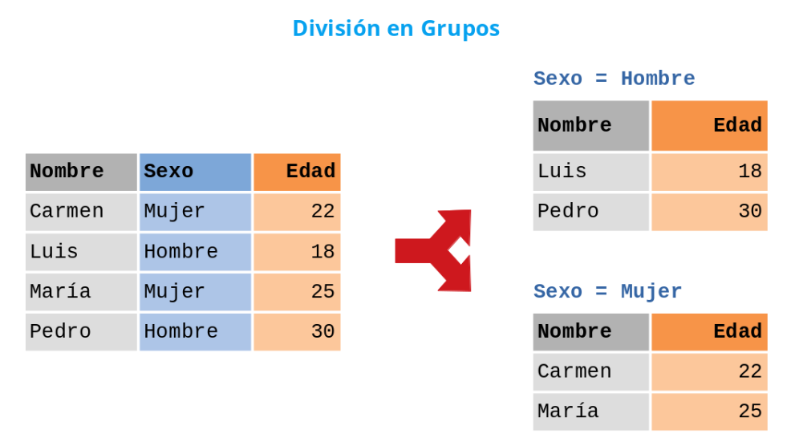

Otras operaciones¶
Eliminar columnas de un Dataframe ¶
Para eliminar columnas de un DataFrame se utilizan los siguientes métodos:
del d[nombre] : Elimina la columna con nombre nombre del DataFrame df.
df.pop(nombre) : Elimina la columna con nombre nombre del DataFrame df y la devuelve como una serie.
df = pd.read_csv('https://raw.githubusercontent.com/asalber/manual-python/master/datos/colesterol.csv')
edad = df.pop('edad')
print(df)
Reemplazar valores vacíos ¶
Si existen valores vacíos y no se quieren eliminar, podemos rellenar las celdas vacías con un valor:
df.fillna(40, inplace = True)
Reemplazar sólo las columnas especificadas ¶
df = pd.read_csv('https://raw.githubusercontent.com/asalber/manual-python/master/datos/colesterol.csv')
df["colesterol"].fillna(130, inplace = True)
Reemplazar usando Media, Mediana o Moda ¶
df = pd.read_csv('https://raw.githubusercontent.com/asalber/manual-python/master/datos/colesterol.csv')
x = df["colesterol"].mean()
df["colesterol"].fillna(x, inplace = True)
Eliminación de duplicados ¶
df=pd.read_excel('ejemplo4.xlsx', sheet_name="Hoja3", header=None)
df.duplicated()
df.drop_duplicates(inplace = True)
Convertir una columna al tipo datetime ¶
Puede ocurrir que una columna que contiene datos de tipo cadena, realmente representa fechas. Para convertir esta columna al formato fecha se utiliza el siguiente método:
to_datetime(columna, formato): Devuelve la serie que resulta de convertir las cadenas de la columna con el nombre columna en fechas del tipo datetime con el formado especificado en formato.
df = pd.DataFrame({'Name': ['María', 'Carlos', 'Carmen'], 'Nacimiento':['05-03-2000', '20-05-2001', '10-12-1999']})
print(pd.to_datetime(df.Nacimiento, format = '%d-%m-%Y'))
Agrupación de un DataFrame ¶
Muchas veces necesitamos agrupar los datos de un DataFrame de acuerdo a los valores de una o varias columnas o categoría, como por ejemplo el sexo o el país.

df.groupby(columnas).get_group(valores): Devuelve un DataFrame con las filas del DataFrame df que cumplen que las columnas de la lista columnas presentan los valores de la tupla valores. La lista columnas y la tupla valores deben tener el mismo tamaño.
df = pd.read_csv('https://raw.githubusercontent.com/asalber/manual-python/master/datos/colesterol.csv')
print(df.groupby('sexo').get_group('M'))
Agregación por grupos ¶
df.groupby(columnas).agg(funciones): Devuelve un DataFrame con el resultado de aplicar las funciones de agregación de la lista funciones a cada uno de los DataFrames que resultan de dividir el DataFrame según las columnas de la lista columnas.
Una función de agregación toma como argumento una lista y devuelve una único valor. Algunas de las funciones de agregación más comunes son:
-
np.min : Devuelve el mínimo de una lista de valores.
-
np.max : Devuelve el máximo de una lista de valores.
-
np.count_nonzero : Devuelve el número de valores no nulos de una lista de valores.
-
np.sum : Devuelve la suma de una lista de valores.
-
np.mean : Devuelve la media de una lista de valores.
-
np.std : Devuelve la desviación típica de una lista de valores.
import numpy as np
df = pd.read_csv('https://raw.githubusercontent.com/asalber/manual-python/master/datos/colesterol.csv')
print(df.groupby('sexo').agg(np.mean))